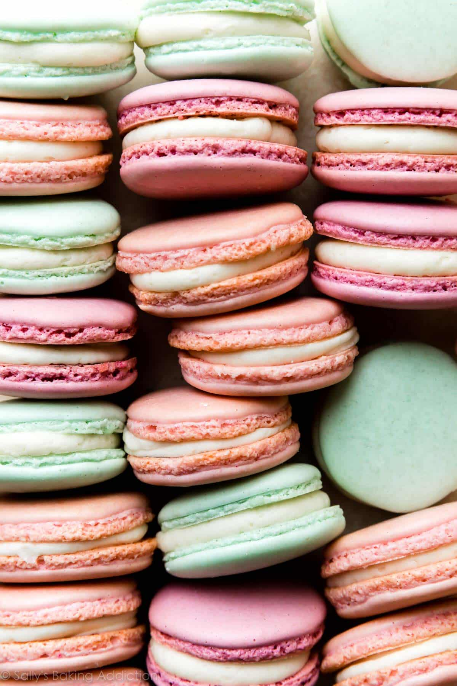

French Macaron

This easy French macaron recipe makes a batch of the most dainty, delicate,
and delicious cookies that will float right into your mouth and disappear. I've packed all my tips into this post to help you out!
Ingredients
- 2 cups powdered sugar
- 1 cup almond flour, finely ground
- 1 teaspoon salt, divided
- 3 egg whites, at room temperature
- ¼ cup granulated sugar
- ½ teaspoon vanilla extract
- 2 drops pink gel food coloring